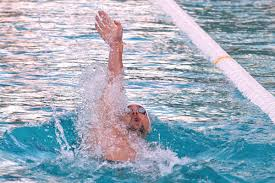

Backstroke is a swimming stroke where the arms are lifted alternitavely out of the water in a backward cicular motion and the legs extended and kicking. The stroke emphasises relaxation and stability, making it a great option for warming down or enjoying a leisuerly swim.
